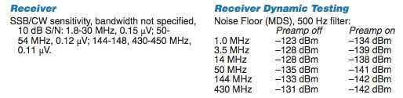
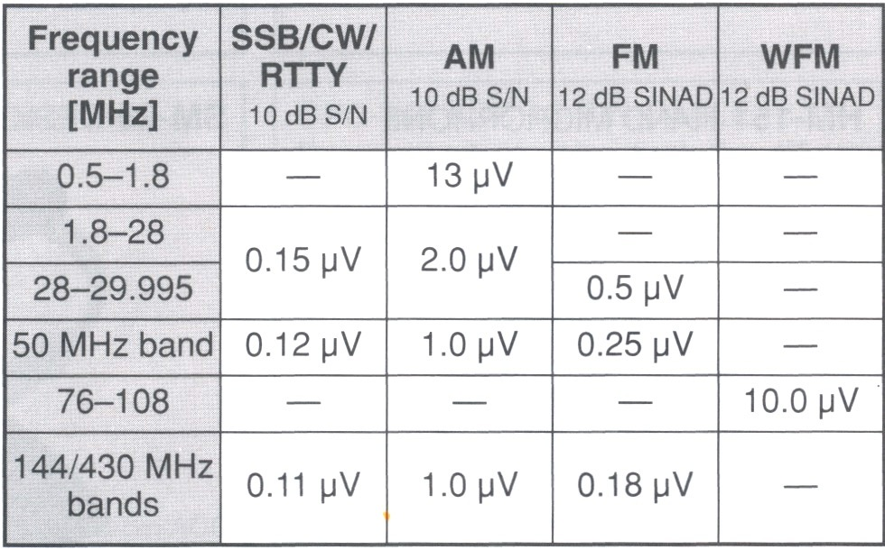
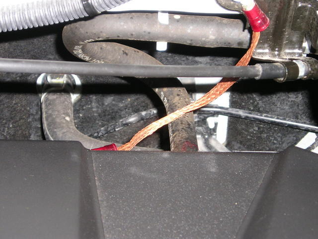
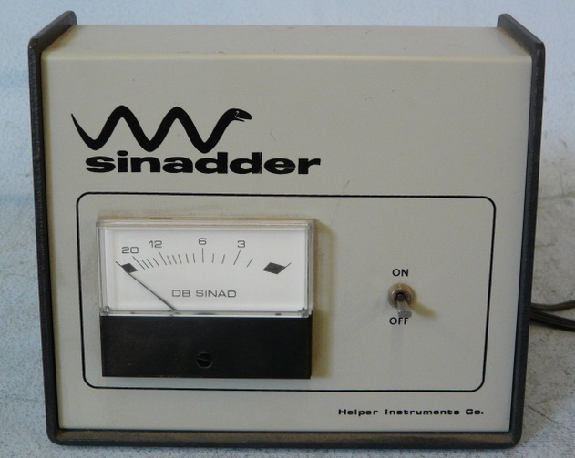
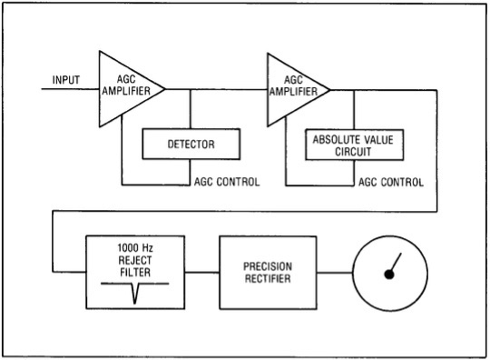

<img> as data-original-src.
Contents: Basics; Automatic Gain Control; Signal Strength; The Noise!; The Results; Measuring SNR;
Signal-to-noise ratio (S+N/N ratio, or SNR for short) is one technical aspect not too many amateurs give a second thought to. Nonetheless, it is important to have at least a basic understanding of what it is, and what affect it can have on our ability to hear another station. Keep in mind, any ratio higher than 1:1, indicates more signal than noise, and the clearer the reception.
SNR is defined as the ratio between the desired signal, and the background noise. It may be expressed as power or voltage, but in our case we use the latter. The noise portion is comprised of atmospheric noise, and the localized (man made?) noise. This is especially true in a mobile scenario where there is an abnormal amount of localized noise generated by the ignition system, and the various on-board electronics. Perhaps a better definition of the noise portion would be hash, or frying noise, as that's what it sounds like when emanating from the speaker. Further, it is often high pitched, and rather tiring to listen to. Thus it behooves us to do what we can to reduce it.
As alluded to above, SNR is usually expressed as a differential between the voltage of the desired signal, and the voltage of the noise. The formula we use is thus 20*log(10) (Vs+Vn/Vn), where Vs is the strength of the desired signal, and Vn as the voltage of the noise portion. As an example, let's assume the incoming Vs is 25uV, and the noise is 2uV. Applying the formula, the SNR would be 22.6 dB, resulting is an easily copied signal.
Quite obviously, if the noise voltage is higher than the signal voltage, the ratio is negative, and we can't hear the other station! Unfortunately, that's the case in too many mobile installations, at least until the incoming signal is extremely strong (>50 uV, perhaps more).


The table at left is from the IC-7000 Owner's Manual. It contains yet another measurement; SINAD. The "D" stands for distortion, and although the term is typically used with respect to FM operation, it can be applied to SSB as well. There is more on this subject below.
But first, rather than go through a whole list of technical machinations about receiver dynamics, let's look at what SNR really means to the average mobile operator. Keep in mind, we're dealing with two diverse, yet coinciding issues; signal strength and background noise.
There is one important function we need to understand before we go on, and that's AGC (Automatic Gain Control) It is a closed-loop circuit built into every modern transceiver. In very basic terms, its purpose is to provide an even audio output, despite variations in the incoming signal (strength). It may be applied at the very front end of the receiver (first RF amplifier), or within one of the IF stages. Sometimes it is adjustable (high, medium, low, and off), and sometimes it isn't.
Whenever we make any kind of before/after comparison, we have to consider the action of the AGC circuitry. For example, if we reduce a large RFI source by proper bonding, the perceived level of that RFI might not seem to change. That's because the AGC circuitry increased the receiver's gain, once the RFI was reduced. Basically the same thing happens when we try to compare one antenna with another. Therefore, if we want to make a before/after comparison, we need to turn off the AGC (if possible), and use the RF gain control instead. But there are a few caveats.
First, almost none of the so-marked RF gain controls are actually in the RF section (true front end). In fact, most are within the first IF section! In turn, their output is fed to the S meter's circuitry, which is a nonlinear function 99% of the time! Thus contrary to popular belief, not very accurate. And don't forget, turning off the AGC always disables the S meter!
We also have to consider that a receiver's front end hears more than you do from the speaker! A good example is a strong nearby signal which may pump the AGC, and cause distortion in the signal you're trying to copy.
The bottom line is, be very careful about making generalized before/after comparisons by noting the difference in what your S meter reads, or what you hear from the speaker!
High Frequency mobile antennas do not exhibit (positive) gain—they have negative gain. In other words, they're lossy. How lossy depends a many factors, and most of those are covered in the Antenna Efficiency article. Therefore, if we want to increase the incoming signal strength, our only alternative is to reduce the antenna's overall losses. We have several ways we can do that. There is a small caveat, however. As the antenna becomes more efficient at picking up the signal, it is also more efficient at picking up the noise as well. So improving the antenna without suppressing the localized noise doesn't improve matters very much, receiver Dynamic Range benefits notwithstanding.
The most important attribute is where, and how, the antenna is mounted. As pointed out in the aforementioned article, when an antenna is mounted low, we force a large portion of the antenna's return current to flow through the lossy surface under the vehicle, rather than through the less lossy superstructure of the vehicle. When abbreviated mounting schemes are used (mag, clamp, clip, and lip mounts), we further increase the already dominate loss factor (ground loss) in the efficiency equation.
Overall antenna (electrical) length is also important, because radiation resistance is a square factor of the (electrical) length. In other words, increase the length by 50%, and we get a 100% increase in radiation resistance. Probably the best example of excessive ground loss, and excessive antenna loss, are short, stubby, poorly mounted, low Q antennas.
Speaking of low Q, it is important to select an antenna which maintains a Q of at least 200 throughout its bandwidth. This rules out about 80% of the current batch of commercially available, remotely tuned, HF antennas. It should be mentioned that Qs higher than 300 are difficult to achieve, and offer little advantage over ones with a Q of 200, unless they're properly mounted. Once the Q drops to under ≈100, the SNR we're striving for drops drastically. Fact is, really lossy and improper antennas installations are better noise antennas, than signal antennas! Especially so if common mode isn't choked off.
Every junction of every solid state device functions as a square law detector. That is to say, the strength of the RF signal detected, increases or decreases to the square of the RF level at the junction detecting the signal. In other words, the strength of the detected RF changes by twice the number of dB, that the signal changes. Therefore, if we reduce the offending signal by 3 dB, the detected signal will be reduced by 6 dB. Liken it to the old adage that an ounce of prevention is worth a pound of cure!

The question remains, how far can localized noise be reduced? There is no clear-cut answer, because every installation is different. This said, even a minimal effort can reduce localized noise by as much as 6 dB (≈1 S unit), and sometimes, a great deal more. An example is shown in the photo. It is a single 4 inch long ground braid installed between a threaded boss on the rear cylinder head and a firewall cable bracket. It reduced the ignition noise level on a Honda Ridgeline by ≈10 dB!
Let's assume the incoming signal strength is 2 uV, and our background noise level is .7 uV. Applying our formula, the SNR would be ≈9 dB. This is right on the ragged edge of solid, Q5 copy even though this would be about an S3 signal. If we reduce the background noise level by 3 dB (down to .35 uV), then the SNR would be nearly ≈15 dB. This is a sufficient enough for Q5 copy in most cases. We could do the same by increasing the incoming signal strength by 3 dB (to 4 uV). If we both increased the receive signal by 3 dB (≈S5), and reduced the noise by 3 dB (≈S1), the SNR would be ≈21 dB, which is sufficient enough for armchair copy.
In all fairness, the above examples do not take receiver Dynamic Range characteristics and/or filter bandwidth into account. However, they do illustrate the importance of suppressing localized (in vehicle) noise, and that's the point we're trying to make.
So the bottom line is; with proper filter choices, proper antenna selection, proper mounting, and proper noise suppression and abatement, we can achieve easy copy, instead of nothing but background noise!
There is one more important point to emphasize. One can easily present a case, where an increase in antenna efficiency of just 1 dB, can make a significant change in the SNR. Enough in fact, to allow a conversation with another station which otherwise could not be carried on!


Setup is really easy. Just connect the input of the Sinadder to the audio output of the transceiver. Turn off the AGC in the transceiver, and back off the RF gain control. Turn on the Sinadder, and bring up the RF gain until the meter just comes off full scale. Then, adjust the VFO until the Sinadder shows the lowest reading. This will occur when the receiving heterodyne is right at one kHz. Make note of the reading, and then make your changes. This might be a Noise Blanker vs. no Noise Blanker. Or, because you installed a few bonding straps to the exhaust system. Whatever the change, the before and after difference will be apparent!
While not dead-on accurate, the method will show if indeed there has been a change in SNR. It will show that some additions (like ferrite chokes on power cables) don't help at all! It will also show the degradation in SNR caused by the noise blanker. In any case, the ideal scenario is to reduce the localized RFI level to a point where the use of a noise blanker isn't needed.
If you don't understand how the Sinadder works, here's a simple explanation. The Sinadder is really a distortion analyzer. The notch filter removes the 1 kHz modulation, and anything left over is extraneous noise. The level of the left over noise is what the meter measures, and explains why the meter scale reads backwards.
{kind=link}
{kind=link}
{kind=link}
{kind=link}
{kind=link}